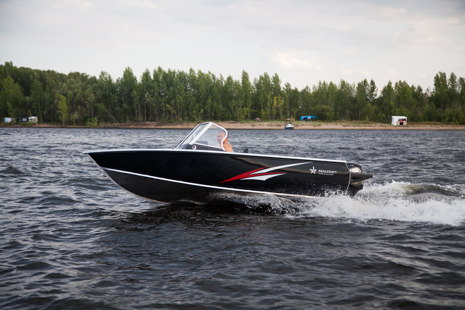

Катер RealCraft 470 Fish PRO (РеалКрафт 470 Фиш ПРО)
 Прайс-лист (цены) на катер и доп. оборудование
Прайс-лист (цены) на катер и доп. оборудование

Технические характеристики катера:
| Параметр | RealCraft 470 |
|
Проектная категория |
C |
|
Пассажировместимость |
5 человек |
|
Длина корпуса |
4,67 м |
|
Ширина корпуса |
1,93 м |
|
Килеватость на транце |
14° |
|
Мощность двигателя |
40-60 л.с. |
|
Масса пустого судна |
288 кг |
|
Максимальная нагрузка |
500 кг |
|
Полное водоизмещение |
995 кг |
|
Высота борта |
0,91 м |
|
Высота транца |
0,38-0,51 м (S или L) |
Стандартное оборудование:
- Тентовые дуги из алюминиевой трубы Fish PRO
- Закаленные стекла
- Корпус из алюминиево-магниевого сплава с силовым набором, носовым и кормовым кокпитами и самоотливным рецессом.
- Блоки плавучести
- Подуключины в основном кокпите
- Пайолы (полы) кокпитов и элементы рундуков из нескользыщей ламинированной фанеры
- Кормовые кринолины (площадки)
- Переборка носового кокпита с проходом
- Трехсекционный козырек с ветровыми стеклами, открывающейся средней частью и бардачком в левой панели.
- Полки вдоль бортов основного кокпита
- Рулевое управление
- Кронштейн для контроллера мотора.
- Пыльник для тросов и проводки мотора
- Отверстие с пыльником для бензошланга.
- Электропроводка
- Предохранитель
- Главный выключатель
- Неавтоматическая трюмная помпа
- Бокс для аккумулятора до 65 Ач.
- Выключатели потребителей
- Прикуриватель или гнездо 12В
- Прибор вольтметр
- Прибор - указатель уровня топлива
- Бортовые огни (красный и зеленый)
- Круговой белый огонь на съемной мачте в корме
- Борта из АМг-листа без оклейки/окраски
- Увеличенный открытый носовой кокпит с рундучком-якорным ящиком и пайолом
- Объемный центральный кормовой рундук FISH PRO с гнездами для удилищ с крышкой из рифленого алюминиевого листа Квинтет
- Три кнехта на палубе (один на носу, два - на корме). Из алюминиевого прутка.
{kind=link}
{kind=link}
{kind=link}
{kind=link}
{kind=link}
{kind=link}
{kind=link}
{kind=link}